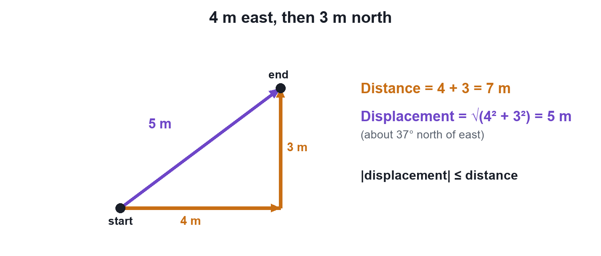

Chapter 7 · Physics
Distance vs Displacement
Video not playing? Watch on Instagram · YouTube
Distance counts the whole path you walked; displacement only looks at the straight line from start to end, with its direction.
Download the short notesPDF, 89 KB · solved examples, practice set and answer key Up next in this chapter
 Speed vs VelocityTwo cars at the same 60 km/h can have different velocities. Speed tells how fast; velocity also tells which way.Physics · simulation
Speed vs VelocityTwo cars at the same 60 km/h can have different velocities. Speed tells how fast; velocity also tells which way.Physics · simulation
Key points
- Distance = total path length (scalar).
- Displacement = straight line from start to end, with direction (vector).
- |Displacement| ≤ distance (equal only for straight-line motion in one direction).
- Back at the start: displacement = 0, distance ≠ 0.
Path or arrow?

For two perpendicular walks a and b: displacement = √(a² + b²)
Comparison
| Feature | Distance | Displacement |
|---|---|---|
| Meaning | Total length of the path travelled | Shortest straight line from start to end, with direction |
| Type | Scalar (size only) | Vector (size + direction) |
| Zero while moving? | No, it only increases | Yes, after returning to the start |
| Depends on the path? | Yes | No, only on start and end |
| SI unit | metre (m) | metre (m) |
Worked examples
- Home → school → home (1 km each way): distance 2 km; displacement 0.
- Half a circle of radius r: distance πr; displacement 2r (the diameter).
- One full lap of a circular track: distance 2πr; displacement 0.
Try it yourself
Goal: Compare the path length with the straight start-to-finish arrow for different paths.
- Pick a path: straight, there-and-back, zig-zag or circle.
- Press Play or drag the time slider.
- Compare the distance with the displacement readout.
- On there-and-back and the full circle, watch the displacement return to zero.
Quick quiz
5 questions. Choose an answer for each, then submit to see your score and the explanations.